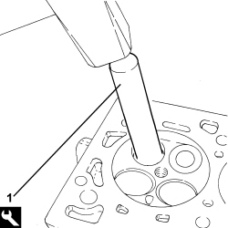

1016E14 VALVE GUIDES IN SINGLE CYLINDER HEAD - REPLACE DURING OP. 1016E10
- Path
- Procedures > 10 ENGINE > 1016 CYLINDER HEAD/S > 1016E CYLINDER HEAD/S - VARIOUS OPERATIONS > 1016E14 VALVE GUIDES IN SINGLE CYLINDER HEAD - REPLACE DURING OP. 1016E10
- Kind
- repair procedure (removal / refitting; the operation number is the code)
- Applies to
- engines: 2.2 JTS, 2.4 JTD 20v; all production periods
- Interactive page
- https://sloeber94.github.io/elrnDB-aBrrSpdr/en/#/946001826
Applies to: engines: 2.2 JTS; all production periods
 Removing
Removing
 Refitting
Refitting1. Remove the valve guides using the tool.
Tool | Description | Function | Validity |
|---|---|---|---|
1870880000 | Extractor | Remove valve guide | 1.9 JTS 2.2 JTS |

Applies to: engines: 2.2 JTS; all production periods
Refitting
Removing- Refit the valve guides using the tool.
Tool | Description | Function | Validity |
|---|---|---|---|
2000002600 | Fitting tool | Fitting valve guide | 1.9 JTS 2.2 JTS |
- Ream the valve guide inner diameter to the recommended figure.
Measurement | Value | Validity |
|---|---|---|
Valve guide inner diameter | 6.000 - 6.012 mm | 1.9 JTS 2.2 JTS |
Applies to: engines: 2.4 JTD 20v; all production periods
Removing
Refitting1. Remove the valve guides (1a) using the tool (1b).
Description | Code | Function | |
|---|---|---|---|
1b | Extractor/Fitting tool | 1.870.880.000 | Valve guide extraction |

Applies to: engines: 2.4 JTD 20v; all production periods
Refitting
RemovingCheck that the outer diameter of the valve guides to be fitted corresponds to the recommended figures.
Subject | Value | |
|---|---|---|
. | Cylinder head valve guides (all) | mm |
- | Outer diameter | 11,010 - 11,030 |
Subject | Value | |
|---|---|---|
. | Cylinder head valve guides (all) | mm |
- | Valve guide oversizing | 0,05 - 0,1 - 0,2 - 0,25 |
1. Fit the new valve guides (1a) using the tools (1b) and (1c).
Description | Code | Function | |
|---|---|---|---|
1b | Extractor/Fitting tool | 1.871.000.600 | Valve guide fitting |
Description | Code | Function | |
|---|---|---|---|
1c | Extractor/Fitting tool | 1.870.880.000 | Valve guide extraction |

Applies to: engines: 2.4 JTD 20v; all production periods
Ream the valve guide bore to the recommended figure.
Subject | Value | |
|---|---|---|
. | Cylinder head valve guides (all) | mm |
- | Inner diameter | 5,40 ÷ 5,60 |